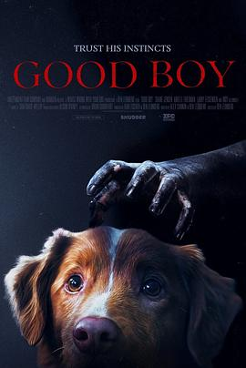

5.9
好狗狗
Good Boy
2025
美国
评分 5.9
导演:
本·莱昂伯格
演员:
印第 / 肖恩·詹森 / 阿丽尔·弗里德曼 / 拉瑞·凡斯登 / 斯图亚特·鲁丁 / 亨特·戈埃兹 / 安雅·克罗切科
类型:
恐怖,惊悚
剧情简介
一栋孤立在乡间的老屋，一只忠诚的狗，以及一场潜伏的诅咒——《好狗狗》用最温情的生物讲述了一段极致的恐怖故事。托德（肖恩·詹森饰）带着他的爱犬印第安纳迪离开城市，试图在寂静的乡村开始新生活。看似平和的土地，却隐藏着阴冷的气息：破碎的狗项圈、血迹斑驳的木门、午夜传来的低吼声，都让印第安纳迪感到不安。随着夜色加深，狗狗的本能察觉到某种非人类的存在——一只死去的猎犬灵魂在房中游荡，试图传递警告。托德最初不以为意，却逐渐被幻觉与低语吞噬，脾气暴躁、行为异常。印第安纳迪成了唯一的“守卫”，它不仅要面对看不见的邪恶，更要在忠诚与恐惧之间挣扎。当灵魂与肉体的界线被撕开，主仆之间的羁绊成为唯一的希望。导演本·莱昂伯格以极简的叙事与主观镜头营造出令人窒息的紧张感。影片的视角多次切换到狗的第一人称，让观众通过它的嗅觉、呼吸与恐惧感知整个世界——墙壁仿佛在呼吸，空气里弥漫着血腥与绝望。配乐采用极低频的嗡鸣声，强化了孤立感与即将降临的死亡氛围。《好狗狗》不仅是一部惊悚片，更是一场关于忠诚与牺牲的寓言。它让观众看到，最深的恐惧往往来自最深的爱。当人类被黑暗诱惑，动物的纯粹反而成了光的象征。结局的最后一幕，印第安纳迪在废墟中静静守望，那一声低吠，既是告别，也是拯救。